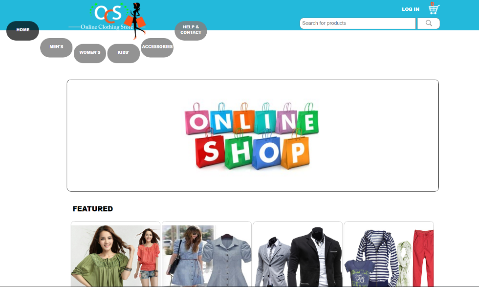
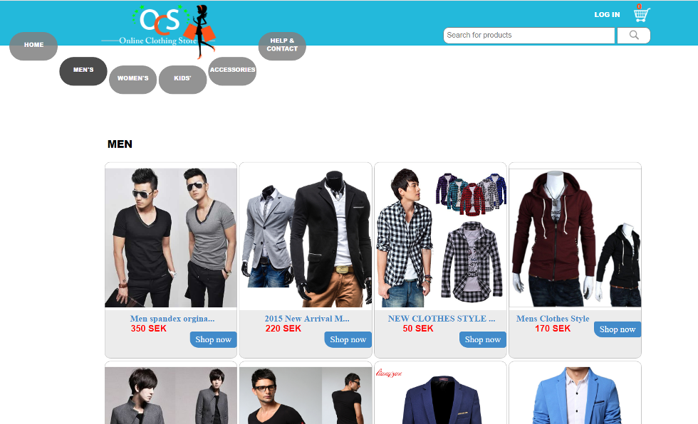
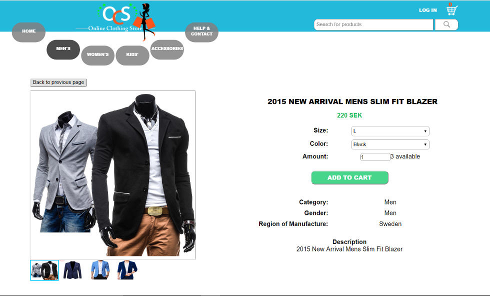
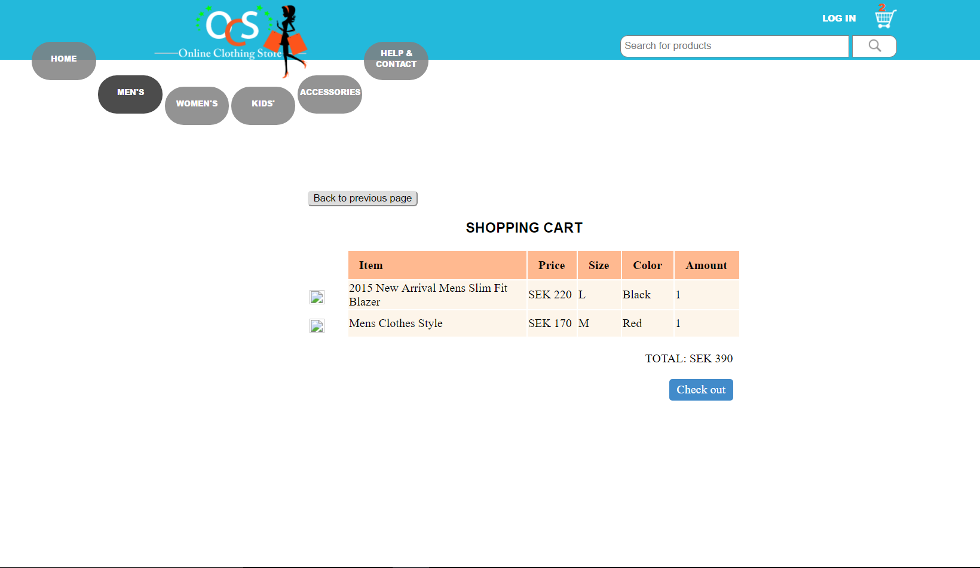
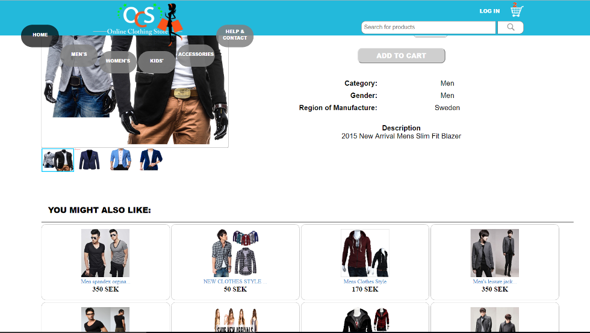

Online Clothing Store
A prototype online web store for clothing.
What is it?
Online Clothing Store is an prototype online web store for clothing, built with the Angular JS framework. It has lots of features including log in functionality, shopping cart, categories, a search bar and a whole lot more.

The front page of the store.

The Men's Category of clothing.
The search function, which gives suggestions when typing.

The item page, which allows you to choose size and color as well as showing how many clothes are available in the database.

The shopping cart where all your purchases go before check out.

The item page also includes suggestions on what else you might also like.